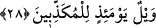
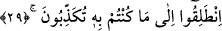
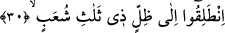

kavramına bilinmeyen ve görülmeyenler de dâhildir. Çünkü bizi üstümüzden çevreleyen
gök de dağlardandır. Böyle olduğunu Nur sûresindeki şu âyet-i kerîme göstermektedir.
Allah şöyle buyuruyor: “O, gökten, oradaki dağlardan dolu indirir.” (en-Nur, 24/43).
Orada nehirler ve kaynaklar yaratmak sûretiyle “size” gerçekten son derece “tatlı su
içirmedik mi?” yâni size orada içecek su kaynakları yarattık ve size bu suları içme
imkânı verdik. Ayrıca hayvanlarınızı ve tarlalarınızı sulama imkânı da bahşettik. Bu
âyet-i kerîmede yer alan “furaten” kelimesine biz “son derece tatlı” anlamını verdik.
Kelimedeki bu anlamdan dolayı, Kufe nehrine “furat” denmiştir. Nehrin bu ismi alması
lezzetinden dolayıdır.
Ebu’l-Leys Semerkandî bu âyet-i kerîmeyi açıklarken şöyle diyor: Size gökten ve
yerden tatlı su içirmedik mi?
Bu âyette geçen “furaten” kelimesinin, nekre getirilmesi tatlılığını yüceltmek içindir,
ya da kısım bildirmek içindir. Çünkü gökyüzünde de tatlı sular vardır. Hattâ gökyüzü
tatlı suyun kaynağı ve döküldüğü yerdir.
28. O gün, (hakîkatleri) yalan sayanların vay hâline!
“O gün” bu gibi büyük nimetleri “yalan sayanların vay hâline!” “Vay hâline”
şeklinde tercüme edilen “veyl” kelimesi aynı zamanda cehennem’de bir vâdînin adıdır.
29. (İnkârcılara o gün şöyle denilir:) yalan sayageldiğiniz azâba doğru gidin!
O gün yalan sayanlara azarlama ve onları korkutma üslubu ile denilecek ki: “Haydi”
dünyada iken “yalanlamış olduğunuz şeye” azâba “gidin.” Bunu, cehennemin
görevlileri ve zebânîleri söyleyeceklerdir.
30. Üç kola ayrılmış, bir gölgeye gidin.
“Haydi” özellikle “üç kola ayrılmış gölgeye gidin.” Cehennem ateşinin dumanının
gölgesine gidiniz. Bu ifâde “serin ve hoş olmayan kapkara dumandan bir gölge
altındadırlar.” (el-Vâkıa, 56/43, 44) âyet-i kerîmesi ile aynı anlamı taşımaktadır. Bir
başka ifâdeyle burada denmiş oluyor ki, haydi üç kola ayrılmış kapkara, kesif bir
gölgeye, duman yığınına gidin.